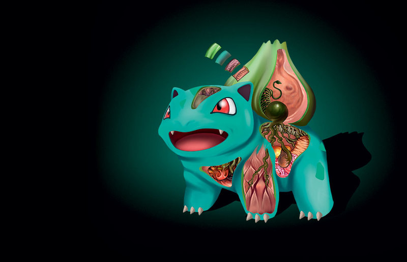
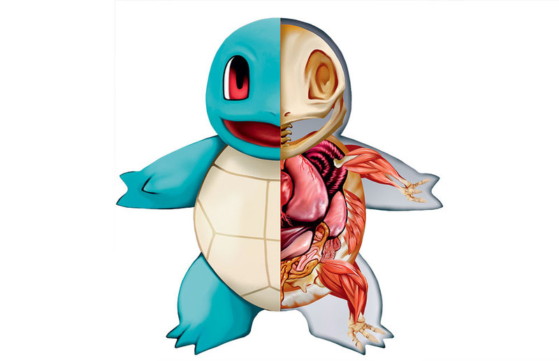

Info about Pokemon
Бульбазавр (Bulbasaur)

Классификация: тип хордовые (Chordata), подтип позвоночные (Vertebrata), надкласс четвероногие (Tetrapoda), класс зверообразные (Theromorpha), отряд звероподобные рептилии (Therapsida).
Внешний вид:
мелкий четвероногий покемон, достигающий роста до 71 см и веса до 6,9 кг. Широкий рот с парой заостренных зубов, мощные трехпалые лапы с когтями. На спине располагается растительная луковица.
Образ жизни: обитает во
влажных низинах, предпочитает близость к человеку. Нередко участвует в ежегодной церемонии эволюции в саду Канто.
Строение: внешние слои луковицы покрыты зеленой фотосинтезирующей тканью, которая может снабжать покемона питанием. Спиралевидные лианы — производные проводящей системы растения. Усики луковицы-симбионта могут достигать мозга бульбазавра, обеспечивая глубокую интеграцию двух организмов. Растительный клубень прорастает непосредственно в тело бульбазавра, соединяясь с его нервной системой, что позволяет координировать реакции животного и растительного «начал» этого покемона. Толстые лапы с сильными мускулами и прочными суставами обеспечивают движение с дополнительным весом растения на спине. Кровеносная система бульбазавра тесно интегрирована с проводящими тканями растения. На иллюстрации показано сердце взрослой особи, оплетенное растительными сосудами, которые получают от него часть питательных веществ.
Чармандер (Charmander)
Классификация: тип хордовые (Chordata), подтип позвоночные (Vertebrata), надкласс четвероногие (Tetrapoda), класс пресмыкающиеся (Reptilia), отряд ящеротазовые (Saurischia).
Внешний вид: ярко-оранжевый
покемон ростом до 65 см и весом до 8,5 кг, с мощными задними конечностями и небольшими передними. Имеет довольно массивный хвост, кончик которого всегда объят пламенем.
Образ жизни: предпочитают жару, часто встречаются
в скалистых горах и пещерах, рядом с вулканами. Живут отшельниками-одиночками, но для охоты могут временно сбиваться в стаи. В период взросления начинают соревноваться в силе с другими покемонами, особенно — с другими огненными.
Строение:чармандеры способны устраивать лесные пожары: такая тактика дает серьезное преимущество этим покемонам, нечувствительным к пламени. Высокий показатель отношения массы мозга к общей массе тела указывает на отличные когнитивные способности этих покемонов. По одной из гипотез, пламя появляется при горении изопрена, который пищеварительная система вырабатывает из растительной пищи. Мышца-сфинктер на конце хвоста контролирует подачу горючего. Усиленные возможности сосудов, участвующих в перекачивании крови, привели к ослаблению сердечной деятельности. Сердце невелико и состоит всего из трех камер. Перистальтические сокращения гладкой мускулатуры сосудов хвоста обеспечивают доставку горючей смеси к кончику.
Сквиртл (Squirtle)

Классификация: тип хордовые (Chordata), подтип позвоночные (Vertebrata), надкласс четвероногие (Tetrapoda), класс пресмыкающиеся (Reptilia), отряд черепахи (Testudines).
Внешний вид: небольшая черепаха
с кожей голубого окраса, круглым коричневым панцирем и большим беличьим хвостом. До своей «эволюции» достигает роста в 50 см и веса около 9 кг.
Образ жизни: в дикой природе встречаются довольно редко, живут рядом
с водоемами и на небольших островах. Одичавшие сквиртлы, брошенные своими хозяевами, могут сбиваться в банды и воровать еду в городах.
Строение: в случае опасности крупная голова этого покемона мигом скрывается под панцирем, который при этом заметно растягивается. Дыхательная система сквиртла сочетает жабры и воздушные мешки, которые он способен полностью заполнять водой и долгие часы извлекать из нее кислород. Плотная голубоватая кожа (и панцирь) обеспечивают сквиртлу отличную адаптацию к жизни в холодной воде. Растяжение эластичного панциря обеспечивают мощные мускулы, раздвигающие твердые пластины в местах сочленений. Возможно, те же мышцы при сокращении позволяют ему с большой силой выбрасывать воду из мешка, направляя струю в противника. Сильные задние лапы позволяют этим покемонам развивать в воде скорость до 20 м/с.
Пикачу (Pikachu)
Классификация: тип хордовые (Chordata), подтип позвоночные (Vertebrata), надкласс четвероногие (Tetrapoda), класс млекопитающие (Mammalia), отряд грызуны (Rodentia).
Внешний вид: маленький пухлый
покемон с ярко-желтой густой шерстью. Острые длинные уши, красные электрические мешки на щеках и необычный хвост в виде молнии. Ходит на двух ногах, хотя во время бега опускается на все четыре.
Образ жизни: растительноядны,
любители фруктов и кетчупа. Живут общинами, предпочитая глубокие лесные чащи. Миролюбивы и прекрасно ладят с другими покемонами.
Строение: ярко-желтая окраска предупреждает об опасности встречи с этим покемоном. Уплощенный, мускулистый хвост используется для балансирования при прыжках, создавая противовес тяжелой голове с электрическими органами. Пикачу чрезвычайно ловко управляет своим тяжелым, коренастым телом и быстро движется, опускаясь на четыре лапы. «Уши» пикачу — не органы слуха. Плотно заполненные электроцитами, они обеспечивают его главным оружием — мощным разрядом. Скопления электроцитов разрастаются в туловище покемона, и до трети веса пикачу может приходиться на его электрические органы. Дополнительное усиление заряда дают вторичные боковые узлы электроцитов, которые увеличиваются с возрастом.